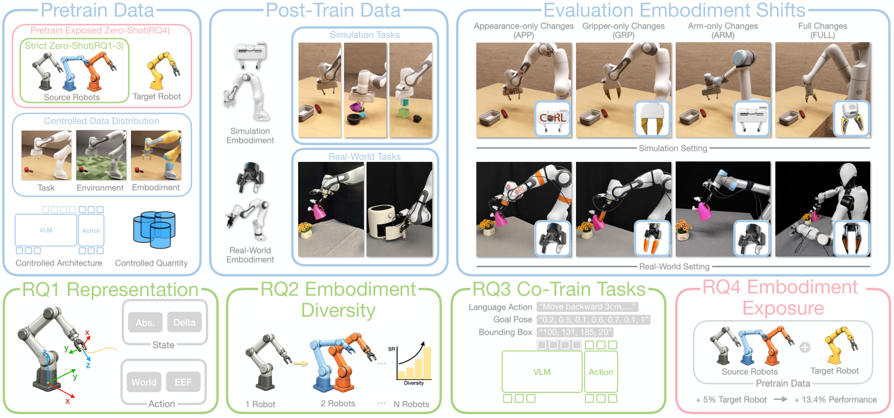
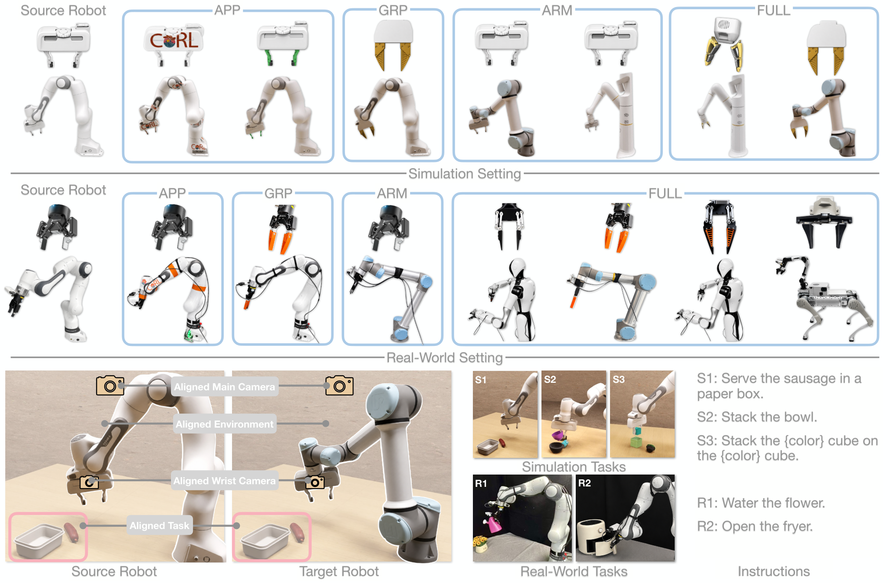
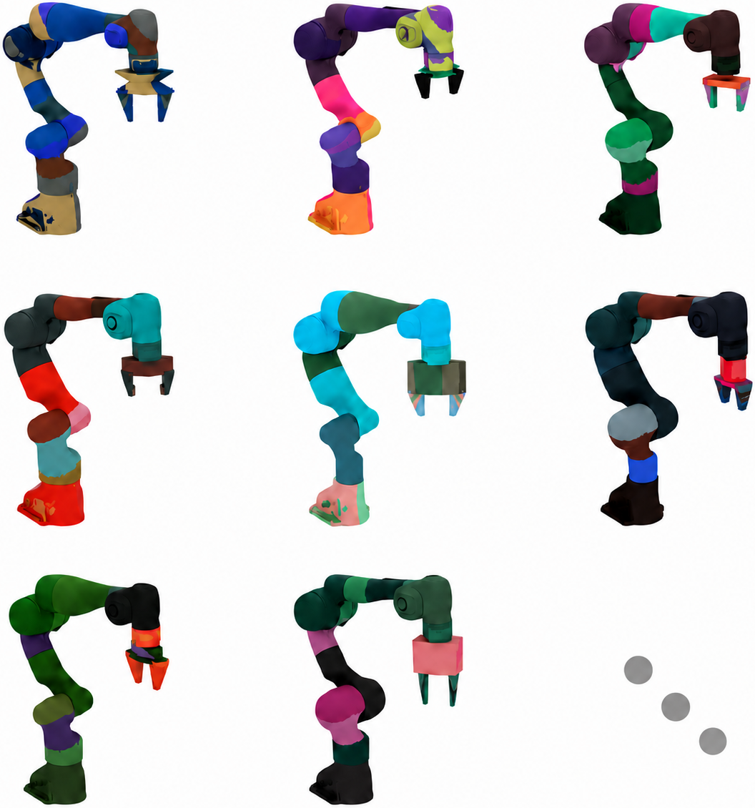
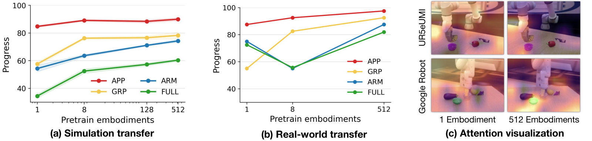

제출: 2026년 9월 2일 · 백본 π0.5 · 14개 target embodiment · sim 6,300 rollout/model + real 140 rollout/model
한 줄 요약 (TL;DR)
"학습 때 본 적 없는 로봇 몸(embodiment: 팔·그리퍼·외관)에도 VLA(vision-language-action) 정책이 그대로 옮겨질까?"라는 질문을, 지금까지 뒤섞여 있던 태스크·씬·카메라·프로토콜을 전부 통제한 상태에서 embodiment만 바꾸는 벤치마크를 새로 짜서 조사. 저자들은 우선 zero-shot을 두 종류로 명확히 나눈다 — strict zero-shot(target 몸이 학습 어디에도 등장 안 함)과 pretrain-exposed zero-shot(pretraining 데이터에만 있고 post-training엔 없음). 그 위에서 네 가지 요인을 격리 실험 — (1) state-action 표현, (2) 사전학습에 쓴 몸의 다양성, (3) 보조 co-training 목표, (4) target 노출 비율. 실측 발견: 모든 상태·액션을 로컬 EEF(End-Effector, 그리퍼 끝) 기준으로 두면 FULL 조합 shift에서 실기기 47.5→87.5%, 같은 총량이라도 몸을 1→512로 다양화하면 sim 평균 58.7→75.7%, task-conditioned bounding box 보조 학습이 co-training 중 최고(+6.6p), pretraining에 target을 5%만 섞어도 +13.4p가 튀어 오르므로 논문들이 strict인지 exposed인지 반드시 밝혀야 한다.
1배경 · 문제의식
VLA 정책은 로봇 팔·그리퍼·외관이 바뀌면 실패한다. 문제는 지금까지의 논문마다 "unseen embodiment 전이"의 정의가 달랐다는 것.
Strict zero-shot: target embodiment가 pretraining에도, post-training에도 단 한 프레임도 등장하지 않는 상태에서 배치.
Pretrain-exposed zero-shot: target이 pretraining엔 소량 있고, 실제 태스크 post-training(fine-tuning)엔 없는 상태.
왜 이 구분이 중요한가: 저자들이 뒤에서 보이듯, pretraining에 target 몸을 5%만 섞어도 성공률이 평균 +13.4p 뛴다. 두 정의가 뒤섞여 있으면 "우리 방법이 더 낫다"가 사실은 "우리 pretraining이 target을 몰래 봤다"로 설명될 수 있다는 뜻.
또한 기존 실험들은 embodiment shift와 태스크/씬/카메라/데이터량 shift를 함께 바꾸는 일이 잦아, "실패 원인이 embodiment 때문인지 다른 요인 때문인지"를 분리할 수 없었다. ZETA는 그 결합을 끊는다.
2핵심 Contribution
정의 두 갈래로 분리 + 통제 벤치마크 — strict / pretrain-exposed 두 zero-shot을 정식으로 분리. sim+real 통합해 14개 held-out target embodiment를 준비: 외관만(Franka+logo, +green), 그리퍼만(Franka+UMI gripper), 팔만(UR5e+Franka hand, GoogleRobot+Franka hand), 팔+그리퍼 전부(UR5e+UMI, GoogleRobot).
4가지 요인의 격리 실험(RQ1–RQ4) — state-action 표현 4조합, source 몸 다양성 1/8/512, 보조 co-training 4종, target 노출 0/5/30/100%. 모든 실험이 백본·태스크·씬·카메라·최적화 스케줄을 고정하고 한 축씩만 바꾼다.
백본은 π0.5(Physical Intelligence의 최근 VLA) 아키텍처를 그대로 사용해 모든 비교 실험이 동일한 모델을 공유. 두 단계 학습: (a) pretraining은 각 RQ별로 데이터셋을 갈아 끼워 실험, (b) post-training은 오직 source embodiment(sim: Franka, real: Franka+Robotiq)의 downstream 데이터로만(40K trajectory/task in sim, 50 demo/task in real).
Embodiment shift 4가지 범주
APP (Appearance)
팔·그리퍼는 같고 겉모습(로고·색상)만 다른 target.
GRP (Gripper)
팔은 같고 그리퍼만 다른 target(예: Franka + UMI gripper).
ARM
그리퍼는 같고 팔만 다른 target(예: UR5e + Franka hand).
FULL
팔·그리퍼 둘 다 다른 target(예: UR5e + UMI, GoogleRobot).
Pretraining pool — 512 procedurally-generated Franka들
Franka-style 스켈레톤을 절차적으로 변형해 512개 다양한 몸을 만든다. 팔 길이·링크 기하·그리퍼 형태·표면 재질/색상·시야를 넓게 흔들어 pretraining pool로 삼는다(Fig. 2). 이 pool 크기가 곧 RQ2의 "다양성" 축.
RQ1 — State-Action 표현 (4가지 조합)
몸이 바뀌면 관절 각도 공간이 통째로 재정의되어 무의미하다. 그래서 손끝 좌표계로 다시 쓰는 것이 흔한 처방인데, 방식이 두 가지다.
State: Absolute EEF
세계 좌표계에서 그리퍼 끝의 절대 위치(=매 순간의 "여기"를 세계 좌표로).
State: EEF-Delta
이전 프레임 대비 EEF의 변화량. 기준점을 각 프레임 자기 자신으로 잡는 로컬 표현.
Action: World-Delta
세계 좌표계에서의 다음 EEF 이동 벡터.
Action: EEF-Delta
현재 EEF 좌표계에서의 이동 벡터. 카메라·베이스 위치와 무관.
이 두 축의 2×2 조합을 실험. 저자들의 가설: 표현이 로컬(EEF 기준)일수록 팔·그리퍼가 달라져도 정책이 그대로 옮겨간다.
RQ2 — Source 다양성 (같은 총량 vs 몸 수)
총 640K 궤적으로 고정된 예산을 유지하되, source 몸의 수만 1개 / 8개 / 512개로 갈아 끼운다. 보완 실험으로 몸 당 예산을 고정하고 몸 수만 32/128/512로 스윕도 함께 진행. 앞의 것은 "다양성이 반드시 유리한가?"를, 뒤의 것은 "더 넣기만 하면 무조건 오르는가?"를 각각 판별.
RQ3 — Co-training 보조 목표 4종
Language-Action Prediction (LAP), EEF-frame: 언어에서 EEF 기준 액션 예측을 병렬 손실로.
Language-Action Prediction, mixed-frame: EEF와 world 두 frame 섞기.
Subgoal Prediction: 다음 서브골(부분 목표)을 예측.
Task-conditioned Bounding Box: 태스크 언어로 조건화된 대상 물체의 bbox를 함께 예측 → 정책이 "어디를 봐야 하는지" 명시적 감독.
RQ4 — Target 노출 비율
Pretraining에 target embodiment 데이터를 0% / 5% / 30% / 100% 섞어 학습한 뒤 post-training은 source만으로 진행. 0%는 strict zero-shot, 나머지는 pretrain-exposed. Oracle은 target으로 직접 post-training한 모델(즉 zero-shot이 아님).
4실험 결과
평가 프로토콜
Sim 3태스크: 소시지 서빙 / 그릇 쌓기 / 큐브 쌓기. 실기기 2태스크: 튀김기 열기 / 화분에 물 주기. 도메인 랜덤화(카메라 위치, 조명, 배경, 레이아웃, 질량, 마찰)를 걸어 평가.
RQ1 — State-Action 표현 (Sim, Table 3의 Average 열)
State
Action
Average
FULL
Absolute EEF
World-Delta
60.3 ± 1.1
38.5
Absolute EEF
EEF-Delta
64.6 ± 0.4
—
EEF-Delta
World-Delta
73.4 ± 0.7
—
EEF-Delta
EEF-Delta
75.7 ± 1.3
74.3
가장 어려운 FULL(팔+그리퍼 전부 다름) 범주에서 38.5 → 74.3(+35.8p). "state·action 둘 다 로컬(EEF 기준)"이 정답.
RQ1 — 실기기 (Table 4)
State
Action
Average
FULL
Absolute EEF
World-Delta
56.0
47.5
Absolute EEF
EEF-Delta
61.6
—
EEF-Delta
World-Delta
60.8
—
EEF-Delta
EEF-Delta
89.9
87.5
실기기에서 격차가 더 커져 +40p. sim보다 도메인 갭이 크기 때문에 표현이 더 결정적.
RQ2 — Source 몸 다양성 (Fig. 5·6, avg)
실험
1 source
8 sources
512 sources
고정 총 예산 640K (sim)
58.7
68.3
75.7
고정 총 예산 640K (real)
56.0
48.0
64.5
고정 per-embodiment 예산 (sim)
—(32→) 71.2
(128→) 73.4
75.7
고정 per-embodiment 예산 (real)
—(32→) 58.3
(128→) 61.2
64.5
고정 총 예산 실기기에서 8 sources가 오히려 떨어지는 non-monotonic 현상 관찰. 하지만 per-embodiment 예산을 유지하면(즉 몸이 늘어난 만큼 데이터가 늘면) 항상 단조 증가. 즉 "다양성 자체가 이득"이라기보다 다양성을 얻으려 개별 데이터를 희석하지 말라는 실용적 교훈.
RQ3 — Co-training 보조 목표 (Sim, 512 sources)
Co-training
Sim avg
Δ
없음 (baseline)
75.7 ± 1.3
—
Language-Action, EEF-frame
81.3 ± 0.5
+5.6
Language-Action, mixed-frame
77.7 ± 0.3
+2.0
Subgoal Prediction
81.8 ± 0.8
+6.1
Task-conditioned BBox
82.3 ± 0.2
+6.6
"이 언어가 가리키는 물체가 화면 어디에 있는지"를 명시적으로 학습시키는 Task-conditioned BBox가 최고. LAP는 EEF-frame이 mixed-frame보다 낫다 — RQ1의 결론과 일관.
RQ4 — Target 노출 비율
Target
0% (strict)
5%
30%
100%
Oracle
UR5e + UMI
69.3
78.6
82.8
87.9
81.2
GoogleRobot
51.4
68.9
71.1
75.4
70.3
5%만 섞어도 두 target 평균 +13.4p. 100% pretrain-exposed는 심지어 target으로 직접 post-training한 Oracle을 넘긴다. 즉 "우리는 zero-shot이다"라고 주장하려면 그것이 strict인지 exposed인지 반드시 명시해야 하고, 5%만 노출돼도 이 논문의 baseline보다 이득이 크다.
RQ4 확장 — 표현 × 노출 상호작용 (Table 6)
State
Action
0% (strict)
5% (exposed)
Absolute EEF
World-Delta
33.9
66.9
Absolute EEF
EEF-Delta
38.6
69.2
EEF-Delta
World-Delta
58.4
67.5
EEF-Delta
EEF-Delta
60.4
71.1
Strict(0%) 조건에선 표현 선택으로 +26.5p까지 벌 수 있음. 5% 노출 조건에선 표현 격차가 좁아진다 — 표현이 좋을수록 노출이 없는 환경에서 상대 이득이 크다.
5Ablation (실질적으로 격리한 요인들)
Action frame(World vs EEF): 평균 ~4.3p 차이.
State 표현(Absolute vs EEF-Delta): FULL 범주에서 +15p 이상.
Source 몸 수(1→512, 고정 총 예산): sim 평균 +17.0p, 실기기는 non-monotonic(다양성이 데이터를 희석할 수 있음).
Co-training 보조 목표: +6~7p 이득. EEF-frame LAP > mixed-frame LAP → RQ1과 일관.
Target 노출 5%: +9~17p — 정의 밝히지 않으면 비교 불공정.
6핵심 Figure / Table

Teaser — 통제된 zero-shot cross-embodiment 벤치마크. Strict zero-shot(왼쪽: pretrain·post-train 어디에도 target 없음) vs Pretrain-exposed(pretrain에만 target). 4개 요인(state-action 표현, source 다양성, co-training, 노출)을 개별 격리 실험. (출처: arXiv:2609.02546)

Taxonomy — Embodiment shift 4범주. APP(외관만) / GRP(그리퍼만) / ARM(팔만) / FULL(전부). 저자들은 14개 target embodiment를 이 네 범주로 배치해 shift 크기별 성능을 분리해 본다. (출처: arXiv:2609.02546)

Figure 2 — Procedurally generated 512 Franka embodiments. Pretraining pool: 팔 링크·그리퍼 기하·외관을 절차적으로 흔들어 만든 512개 몸. 이 pool 크기를 갈아 끼우는 것이 RQ2의 "source 다양성" 축. (출처: arXiv:2609.02546)

RQ2 — Source 몸 다양성 성능 곡선. 총 예산 640K를 고정한 채 source를 1→8→512로 늘리면 sim 58.7→68.3→75.7(+17p). 실기기는 8에서 되레 내려가는 non-monotonic → "몸 수가 늘어난 만큼 데이터를 늘려야" 함. (출처: arXiv:2609.02546)